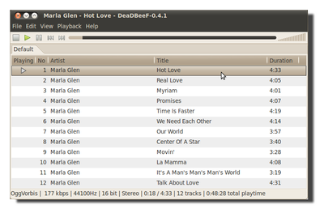
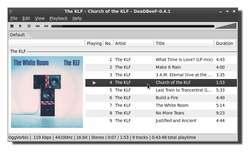
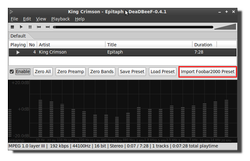

DeaDBeeF
Dieser Artikel wurde für die folgenden Ubuntu-Versionen getestet:
Ubuntu 16.04 Xenial Xerus
Ubuntu 14.04 Trusty Tahr
Zum Verständnis dieses Artikels sind folgende Seiten hilfreich:
DeaDBeeF  ist ein leichtgewichtiger und zugleich funktionsreicher Audioplayer für Linux und Android. Das ressourcenschonende Arbeiten wird durch eigene Plugins bzw. Codec-Bibliotheken (anstelle der Nutzung eines externen Multimedia-Frameworks) als auch durch den Verzicht auf eine Datenbankfunktion erreicht. Die abzuspielenden Dateien werden aus Playlisten oder mit einem Dateimanager geladen, bei Bedarf per "Drag&Drop".
ist ein leichtgewichtiger und zugleich funktionsreicher Audioplayer für Linux und Android. Das ressourcenschonende Arbeiten wird durch eigene Plugins bzw. Codec-Bibliotheken (anstelle der Nutzung eines externen Multimedia-Frameworks) als auch durch den Verzicht auf eine Datenbankfunktion erreicht. Die abzuspielenden Dateien werden aus Playlisten oder mit einem Dateimanager geladen, bei Bedarf per "Drag&Drop".
 Funktionen:
Unterstützt ALSA, OSS und PulseAudio
18-Band-Equalizer
Kompatibel zu Equalizer-Presets von foobar2000
Abspielen von Streams
Herunterladen und Anzeigen von Coverbildern (Album Art)
Lückenlose Wiedergabe (Gapless Playback)
Last.fm-Scrobbling
"Minimize to tray": Status-Symbol mit Programmsteuerung
Wiedergabelisten in Tabs organisieren
"Drag&Drop" in Wiedergabelisten und aus dem Dateimanager heraus
OSD-Benachrichtigung
Unterstützung von Replay Gain
Tastenkürzel zur Steuerung
Zufällige Wiedergabe und Endlos-Modus
Konvertieren von Audiomaterial
Unterstützte Audioformate sind neben MP3 (neben MPEG-1 auch MPEG-2), Vorbis, FLAC, RIFF WAVE, Advanced Audio Coding, WavPack, Shorten, Musepack, SID (c64 etc.), MIDI (per AdLib oder TiMidity), DTS auch die Audioformate verschiedener älterer Spielkonsolen (Playstation, Sega Saturn, Dreamcast, SNES etc.) und verschiedene Tracker-Audioformate.
Während andere Audioplayer unter Linux oftmals überhaupt keinen- oder nur einen sehr schlichten Equalizer besitzen, bietet DeaDBeeF einen umfangreichen 18-Band-Equalizer. Erweiterungen ergänzen den Player um eine Menge zusätzlicher Möglichkeiten. Die Programmoberfläche verwendet GTK+ und fügt sich gut in die Desktop-Umgebungen GNOME, LXDE und Xfce ein.
Installation¶
DeaDBeeF befindet sich nicht in den offiziellen Paketquellen. Es gibt drei Alternativen:
PPA¶
Es steht ein "Personal Package Archiv" (PPA) [1] zur Verfügung.
Adresszeile zum Hinzufügen des PPAs:
ppa:starws-box/deadbeef-player
Hinweis!
Zusätzliche Fremdquellen können das System gefährden.
Ein PPA unterstützt nicht zwangsläufig alle Ubuntu-Versionen. Weitere Informationen sind der  PPA-Beschreibung des Eigentümers/Teams starws-box zu entnehmen.
PPA-Beschreibung des Eigentümers/Teams starws-box zu entnehmen.
Damit Pakete aus dem PPA genutzt werden können, müssen die Paketquellen neu eingelesen werden.
Nach dem Aktualisieren der Paketquellen kann das folgende Paket installiert [2] werden:
deadbeef (ppa)
 mit apturl
mit apturl
Paketliste zum Kopieren:
sudo apt-get install deadbeef
sudo aptitude install deadbeef
Fremdpaket¶
Alternativ zum oben genannten PPA kann man auch ein Fremdpaket  herunterladen und manuell installieren [3]. Siehe auch Problembehebung.
herunterladen und manuell installieren [3]. Siehe auch Problembehebung.
Hinweis!
Fremdpakete können das System gefährden.
Portable Version¶
Seit einiger Zeit bietet der Programmierer auch eine portable Variante an. Diese ist besonders interessant, wenn man eine ältere Ubuntu-Version nutzt, bei der man mit veralteten bzw. fehlenden Abhängigkeiten zu kämpfen hat. Das Programm bringt hier seine benötigten Bibliotheken selbst mit und greift bis auf wenige Ausnahmen nicht auf die des Systems zurück.
Hinweis!
Fremdsoftware kann das System gefährden.
Das sogenannte "static portable build" findet sich für die 32- und 64-Bit-Architekturen im Downloadbereich der Webseite. Das Paket kann in einen beliebigen Ordner entpackt [4] und die enthaltene Datei deadbeef ausführbar gemacht werden [5]. Anschließend sollte sich das Programm über die Datei starten lassen [6].
Optional kann man sich einen Programmstarter ~/.local/share/applications/deadbeef.desktop erstellen (Pfad bitte noch anpassen):
[Desktop Entry] Name=DeaDBeeF Type=Application GenericName=Audio Player Comment=Listen to music Comment[de]=Lausche Deiner Musik Exec=/PFAD/ZU/deadbeef %F Icon=/PFAD/ZU/deadbeef.png MimeType=application/ogg;audio/x-vorbis+ogg;application/x-ogg;audio/mp3;audio/prs.sid;audio/x-flac;audio/mpeg;audio/x-mpeg;audio/x-mod;audio/x-it;audio/x-s3m;audio/x-xm;audio/x-mpegurl;audio/x-scpls; Categories=AudioVideo;Player;GTK; Terminal=false X-PulseAudio-Properties=media.role=music Keywords=Sound;Music;Audio;Player;Musicplayer;MP3 X-Ayatana-Desktop-Shortcuts=Play;Pause;Stop;Next;Prev [Play Shortcut Group] Name=Play Name[de]=Wiedergabe Exec=deadbeef --play TargetEnvironment=Unity [Pause Shortcut Group] Name=Pause Name[de]=Pause Exec=deadbeef --pause TargetEnvironment=Unity [Stop Shortcut Group] Name=Stop Name[de]=Stopp Exec=deadbeef --stop TargetEnvironment=Unity [Next Shortcut Group] Name=Next Name[de]=Weiter Exec=deadbeef --next TargetEnvironment=Unity [Prev Shortcut Group] Name=Prev Name[de]=Zurück Exec=deadbeef --prev TargetEnvironment=Unity
Verwendung¶
Nach erfolgreicher Installation ist das Programm bei Ubuntu-Varianten mit einem Anwendungsmenü über "Multimedia -> DeaDBeeF" aufrufbar. DeaDBeef lässt sich intuitiv bedienen. Praktisch ist im Vergleich mit anderen Playern die Möglichkeit, Wiedergabelisten (Playlisten) über mehrere Tabs zu organisieren. Die Tabs lassen sich einzeln speichern bzw. öffnen.
Wiedergabelisten¶
Wiedergabelisten für Internetradio-Streams in den Formaten M3U und PLS werden über "Datei -> Dateien öffnen" bzw. "Datei -> Dateien hinzufügen" eingelesen – und nicht über den Menüpunkt "Wiedergabeliste laden". Dieser öffnet nur Listen im eigenen Format .dbpl.
Wiedergabelisten in den beiden genannten Formaten (M3U und PLS) mit lokalen Pfadangaben funktionieren bisher nicht.
Album Art¶

Um die "Album Art"-Anzeige zu aktivieren, klickt man mit der rechten Maustaste  auf die Leiste mit den Spaltenköpfen ("Wiedergabe", "Künstler" usw.).
auf die Leiste mit den Spaltenköpfen ("Wiedergabe", "Künstler" usw.).
Im Kontextmenü wählt man: "Spalte hinzufügen", anschließend wird unter Typ "Album Art" ausgewählt. Das Auswahlfeld "Titel" kann nach Belieben beschriftet oder freigelassen werden. Die neue Spalte kann man nun innerhalb der vorhandenen Spalten per "Drag & Drop" positionieren. Damit die Coveranzeige funktioniert, nun wiederum per Rechtsklick auf die neue Spalte "Gruppieren nach -> Künstler/Datum/Album" aktivieren.
Die Auswahl, woher die "Album Art"-Anzeige ihre Informationen bezieht, bestimmt man in "Bearbeiten -> Einstellungen -> Erweiterungen -> Album Artwork -> Einstellungen".
Equalizer¶

Der Equalizer lässt sich im Hauptmenü unter "Ansicht" anzeigen und aktivieren. DeaDBeeF ist in der Lage, Equalizer-Presets des Audio-Players foobar2000 zu verarbeiten.
Damit stehen eine Fülle ausgereifter Klangvoreinstellungen zur Verfügung. Mit der Schaltfläche "Importiere Foobar2000 Voreinstellung" (siehe Abbildung) können entsprechende .feq-Presets importiert werden. Presets findet man über den unten angegebenen Link oder eine Suchmaschine.
Designmodus¶
Neuere Programmversionen bieten über "Ansicht -> Designmodus" die Möglichkeit, die Standardoberfläche mit der Wiedergabeliste um zusätzliche Elemente wie eine Coveranzeige oder ein Oszilloskop zu erweitern (Beispiele). Die konkrete Vorgehensweise erklärt ein Blogbeitrag . Um eigene Anpassungen wieder zurückzusetzen, beendet man das Programm und entfernt aus der Datei ~/.config/deadbeef/config die Zeile, die mit
gtkui.layout.
beginnt. Nach dem Abspeichern der Datei sollte die Optik beim nächsten Programmstart wieder dem ursprünglichen Zustand entsprechen.
Status-Symbol¶
| Status-Symbol | |
| Maustaste | Funktion |
| | Bedienmenü |
 | Programmfenster wird ein/ausgeblendet |
 scroll scroll | Lautstärke des Players regeln |
| klick | Ton an/aus |
Konfiguration¶
Unter "Bearbeiten -> Einstellungen" befindet sich der Einstellungsdialog.
Einstellungen¶
| Auswählbare Einstellungen | |
| Tab | Zweck |
| Sound | Auswahl des Ausgabe-Plugins und -Geräts |
| Playback | Einstellung von "Replaygain" & "Samplerate" |
| GUI | Verschiedene Einstellungen zur Programmoberfläche |
| Colors | Zuordnung der Farben in der Darstellung |
| Netzwerk | Einstellung eines Proxy-Servers |
| Tag writer | Metadaten-Einstellungen |
| Erweiterungen | Auflistung & Konfiguration der Plugins (die einstellbaren sind unten aufgelistet) |
| Globale Tastenkürzel | Belegung der "Hotkey"-Einstellungen |
Konfigurierbare Erweiterungen¶
| Erweiterungen | |
| Titel | Zweck |
| ALSA output plugin | ALSA Einstellungen |
| Album Artwork | Einstellung zu Coverbildern |
| Audio CD player | Aktivierung & Einstellung des CDDB/freeDB Datenbankzugriffs |
| FFMPEG audio player | FFmpeg zur Audio-Dekodierung nutzen |
| Game_Music_EMU decoder | Einstellung der Songlänge |
| Standard GTK2 user interface | Aktivierung des Bestätigungsdialogs beim Löschen von Dateien von der Festplatte; Debug Modus |
| Last.fm scrobbler | Aktivierung & Eingabe der Benutzerdaten des Last.fm Scrobbelns |
| OSD Notify | Aktivierung & Formatierung von Benachrichtigungen auf dem Desktop |
| OSS output plugin | Unterstützung des veralteten OSS-Soundsystems |
| PulseAudio output plugin | Einstellungen zu PulseAudio |
| SID player | Aktivierung & Einstellungen von "HVSC" |
| Standard GTK2 user interface | DeaDBeeF GUI |
| VTX player | AY8910/12 Chip Emulator |
| WAV/PCM player | Abspielen von AIFF-Dateien |
| WildMidi Player | Pfadeinstellungen der TiMidity-Konfiguration |
Problembehebung¶
Fremdpaket¶
Wird das Fremdpaket installiert, befindet sich die Programmdatei anschließend im Ordner /opt/deadbeef/bin/. Möchte man DeaDBeeF systemweit über den Befehl deadbeef ausführen, ist noch eine symbolische Verknüpfung anzulegen:
sudo ln -s /opt/deadbeef/bin/deadbeef /usr/local/bin/deadbeef
Netzwerkfreigaben¶
DeaDBeef kann Musik von Netzwerkfreigaben, die via GVFS eingebunden sind, nicht direkt abspielen. Interessanterweise klappt es aber mit bereits eingebundenen Freigaben. Dazu öffnet man die Freigabe zuerst mit einem Dateimanager, der GVFS unterstützt ("Orte -> Netzwerk" oder "Gehezu -> Netzwerk"). Die eingebundenen Freigaben finden sich im Ordner ~/.gvfs/ unter der Bezeichnung FREIGABE_AUF_SERVER wieder. Um den Zugriff innerhalb von DeaDBeef zu erleichtern, kann man sich eine symbolische Verknüpfung anlegen:
ln -s ~/.gvfs/ ~/Netzwerkumgebung
Nun kann man die Funktionen "Datei -> Dateien Öffnen", "Datei -> Dateien hinzufügen" und "Datei -> Verzeichnisse hinzufügen" von DeaDBeeF wie gewohnt nutzen, in dem man ~/Netzwerkumgebung auswählt.
Hinweis:
Ab Ubuntu 12.10 wird statt ~/.gvfs/ der Ordner /run/user/BENUTZERNAME/gvfs verwendet.
Cuesheet öffnen¶
Das Laden einer Cuesheet-Datei verläuft unter DeaDBeef etwas seltsam: Es darf nicht die .cue-Datei selbst geöffnet werden, sondern stattdessen müssen die zugehörigen Audiodateien gewählt werden. DeaDBeef sucht daraufhin automatisch nach einem Cuesheet und bevorzugt es. Dieses untypische Verhalten sollte in Versionen neuer als 0.5.5 nicht mehr enthalten sein.
Links¶
FAQ
- Fragen und Antworten
A player called deadbeef
auf Ubuntuforums.orgDeaDBeeF - Lightweight Audio Player
- Diskussion im Arch Linux ForumDie besten Player für Linux
 - Beitrag im Audio.HQ Forum
- Beitrag im Audio.HQ ForumConky for DeadBeef 1.0
- zeigt Coverbilder (wenn vorhanden), Titel, Künstler, Album und Jahr anAudioPlayer
 Übersichtsartikel
Übersichtsartikel
- Erstellt mit Inyoka
-
 2004 – 2017 ubuntuusers.de • Einige Rechte vorbehalten
2004 – 2017 ubuntuusers.de • Einige Rechte vorbehalten
Lizenz • Kontakt • Datenschutz • Impressum • Serverstatus -
Serverhousing gespendet von